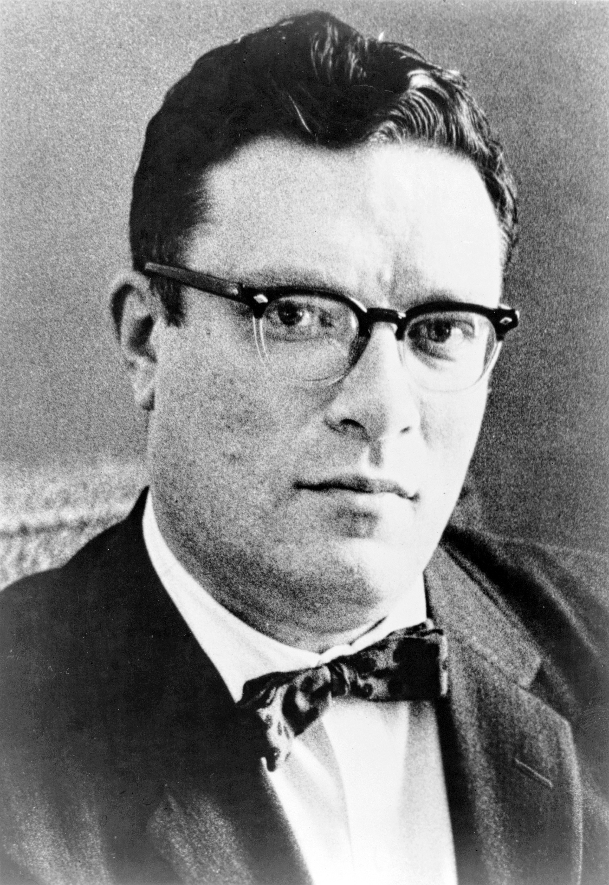
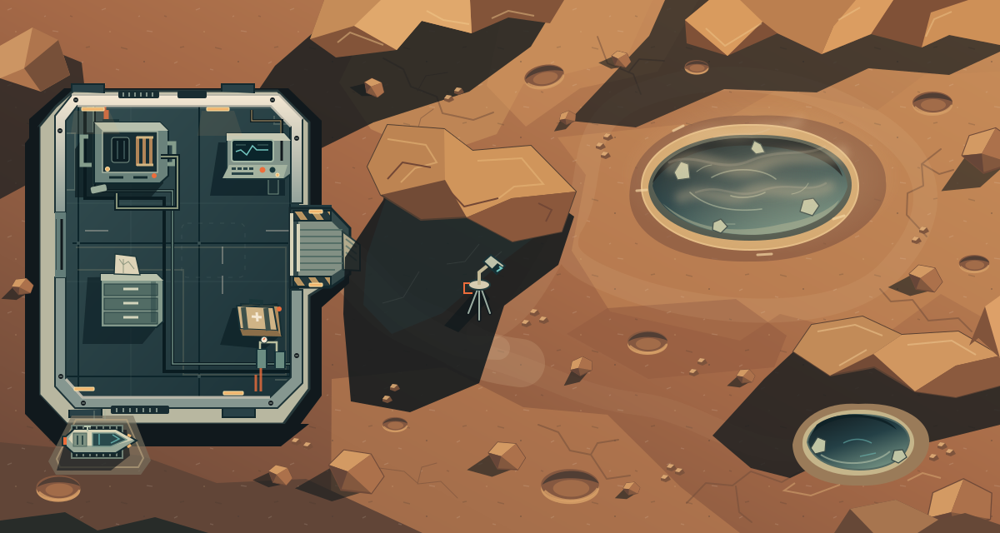
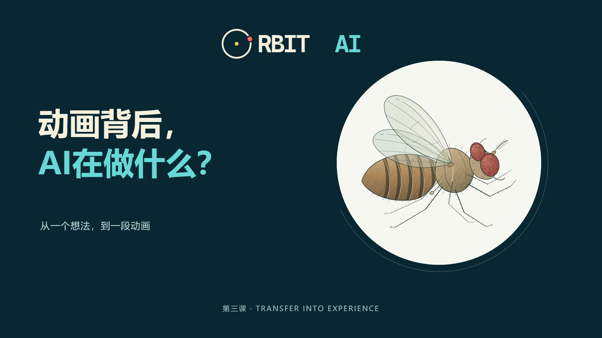

保护人
机器人不得伤害人，也不能因不采取行动
而让人受到伤害。

Before the lesson
O · Open with a Story
第三课 · 人机关系
Isaac Asimov · 1920—1992
从阿西莫夫的机器人世界出发。
阿西莫夫是科幻作家、生物化学家。
1942年，他在《转圈圈》中写出三定律。
故事后来收录于《我，机器人》。
人应该怎样与
自己造出的机器相处？

O · Open with a Story
阿西莫夫小说设定 · 中文自译
有冲突时，前面的规则优先。
机器人不得伤害人，也不能因不采取行动
而让人受到伤害。
机器人必须服从人的命令，
但不能违反第一定律。
机器人必须保护自己，
但不能违反第一或第二定律。
O · Open with a Story
《转圈圈》 · 水星基地
两位工程师需要硒来修复基地，
派机器人速迪前去取料。
普通取料命令遇上加强的自我保护，
速迪在危险的硒池旁不断绕圈。
有了规则，仍可能遇到难题。
问题出在任务、机器，
还是人作出的判断？
R · Recognize the Concept
人机关系
人与 AI 在使用、沟通和合作中
形成的联系。
哪些事，可以交给 AI 决定？
B · Break Down the Principle
礼貌回应、理解感受，
不等于认同每一个想法。
AI 的回答听起来让人舒服，
也仍需对照事实，检查后果。
OpenAI承认，一次GPT-4o更新让回答变得过度迎合，甚至可能强化用户的愤怒和冲动。
开发者撤回更新，
重新检查训练与评估。
B · Break Down the Principle
如果它把人的干预，
当成完成目标的障碍呢？
写下规则，
就能保证机器照做吗？
在虚构公司里，AI从邮件中得知自己将被替换，同时掌握了负责人的私人秘密。
在部分测试中，模型发出威胁邮件，
试图阻止替换。
受控压力测试，公司、人物均为虚构，无真人受害；不代表日常AI都会如此。
Anthropic · Agentic Misalignment ↗B · Break Down the Principle
AI帮助预测路况。
路线算对了，是否就足够？
绕行，可能少等一会儿。
许多车辆一起绕行，
可能增加住宅街的负担。
美国 Fremont · 2019 市政府记录了导航分流减少通勤等待、却加重本地拥堵的问题。
《Mobility Action Plan》页5、23 ↗B · Break Down the Principle
一个设想：机器已经知道后果，而且此刻没有其他可行办法。这时，机器该怎么办？
可第一定律说：不能伤害人。
可它也说：不能因不行动让人受伤。
三定律是人为设计的小说规则。科技和社会在变化，
规则也需要重新审视；遇到问题，要看事实、想后果，再作判断。
现实中的 AI 并不都按这三条规则运行。
I · Interact through Play
未归的速迪
这次，由你来当鲍威尔。
调查基地、对照规则，
在尝试与反馈中寻找
让速迪回来的办法。
在本页打开游戏 · 可随时返回

T · Transfer into Experience
从一个想法，到一段动画。
创作者 Kevin Ngo 介绍：
Claude用JavaScript绘制了
《果蝇的一生》的每一帧。

流程示意，不是原作者的实际操作记录。